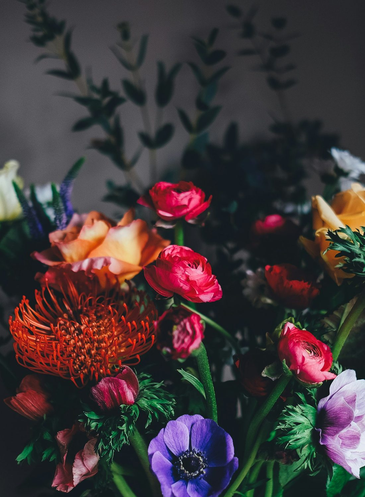
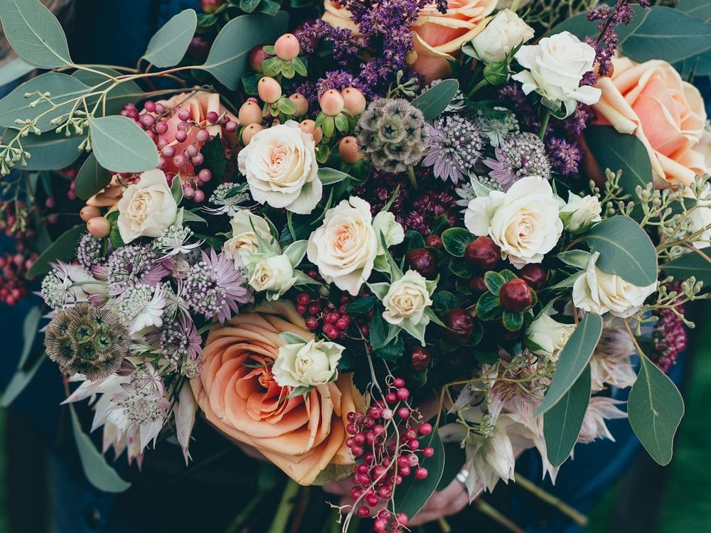
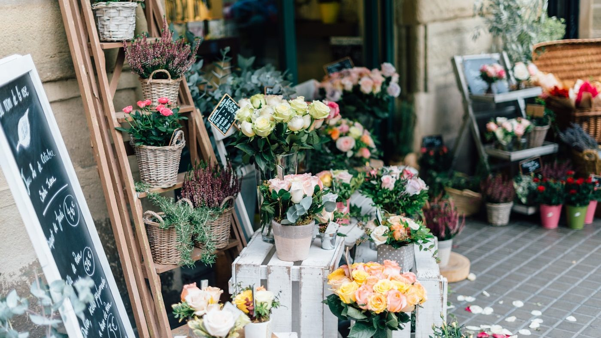
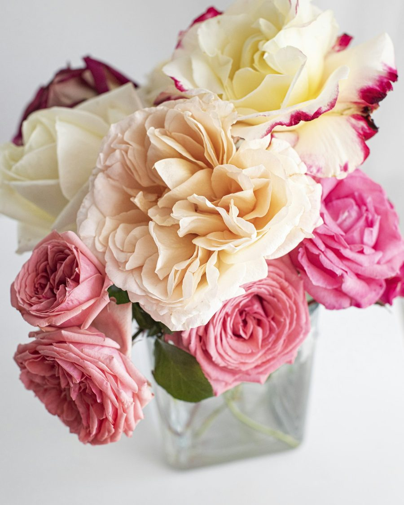
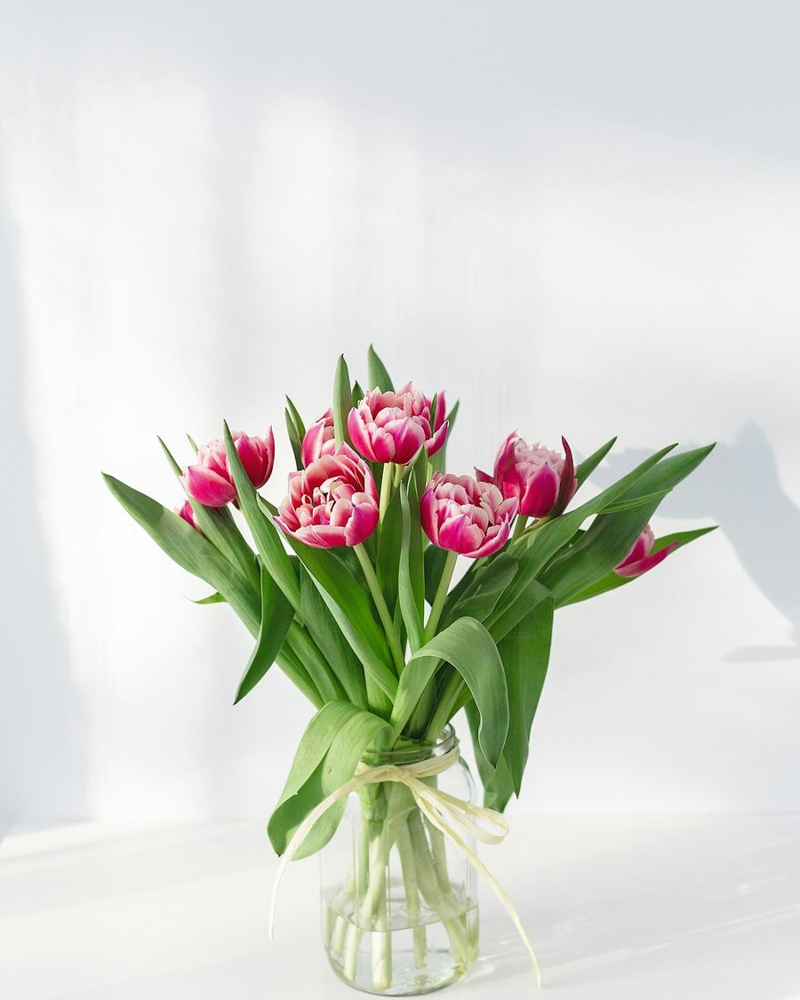

Sträuße & Gestecke
Handgebundene Sträuße für jeden Anlass und florale Gestecke für Tisch, Fenster und Fest — frisch zusammengestellt, passend zur Jahreszeit.
Floristik aus Weyhausen
In meinem Atelier binde ich Sträuße und Gestecke von Hand — frisch, der Jahreszeit entsprechend und ganz auf Ihren Anlass abgestimmt. Für die schönen Momente genauso wie für die schweren.


Das Atelier
Bei mir gibt es keine Sträuße von der Stange. Ich nehme mir Zeit, höre zu und stelle aus frischen Blumen genau das zusammen, was zu Ihrem Anlass und Ihrem Menschen passt — vom kleinen Gruß bis zur großen Geste.
Ob ein Geburtstagsstrauß, der Blumenschmuck für Ihre Hochzeit oder ein würdevolles Trauergesteck: Sprechen Sie mich gerne an. Am liebsten persönlich oder ganz kurz am Telefon.
Leistungen
Handgebundene Sträuße für jeden Anlass und florale Gestecke für Tisch, Fenster und Fest — frisch zusammengestellt, passend zur Jahreszeit.
Brautstrauß, Anstecker, Tischschmuck und Raumdekoration — stimmig aufeinander abgestimmt, damit Ihr großer Tag auch floral genau Ihrer ist.
Kränze, Trauergestecke und Sargschmuck — würdevoll und mit Feingefühl gebunden. Ich begleite Sie ruhig durch diese Auswahl.
Zimmer- und Saisonpflanzen, dazu passende Übertöpfe und kleine Dekoideen für daheim — gut beraten und liebevoll ausgesucht.
Regelmäßig frische Blumen — wöchentlich oder im Monatsrhythmus, fürs Zuhause, das Büro oder als wiederkehrende Aufmerksamkeit.
Bestellen Sie ganz einfach per Anruf vor und holen den Strauß zur Wunschzeit ab. Lieferung in Weyhausen und Umgebung auf Anfrage.

„Blumen sagen oft mehr als Worte. Meine Aufgabe ist es, für jeden Moment die richtigen zu finden.“
Connys Blumen Atelier
Galerie
Eine kleine Auswahl von Sträußen und Arrangements. Haben Sie etwas Bestimmtes im Sinn? Rufen Sie gern an — ich binde es Ihnen.


Hinweis: Beispielbilder. Vor Veröffentlichung durch Fotos eigener Arbeiten ersetzen.
Öffnungszeiten
Für größere Aufträge, Hochzeiten und Trauerfloristik vereinbaren wir am besten vorab einen Termin — dann nehme ich mir in Ruhe Zeit für Sie.
Jetzt anrufenBeispielzeiten — bitte vor Veröffentlichung anpassen.
Kontakt & Bestellung
Am schnellsten geht es telefonisch: Sagen Sie mir den Anlass, die Farben und Ihr Budget, und ich stelle Ihnen etwas Passendes zusammen — zum Abholen oder auf Wunsch geliefert.